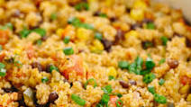

Baked Veggie Quinoa

Description:
This is a family receipe that has been in my family for over 100 years. While it takes a long time to cook, it's definitely worth all the effort!
Ingedients:
- quinoa
- hot sauce
- cheese
- your favorite veggies
Steps
- remove the sheels from the box and boil for 10 minutes until al dente.
- Add first shell to baking sheet
- add tomato saunce and oregano
- sprinkle cheese on top
- repeat for 4 additional layers of the lasagna